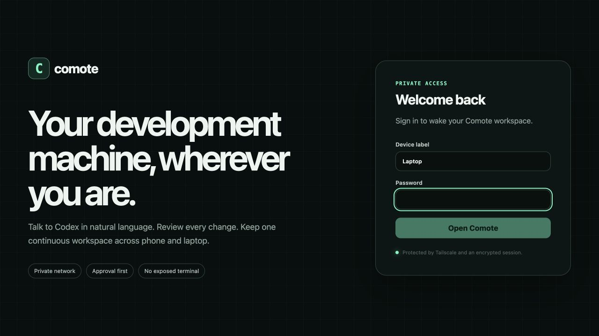
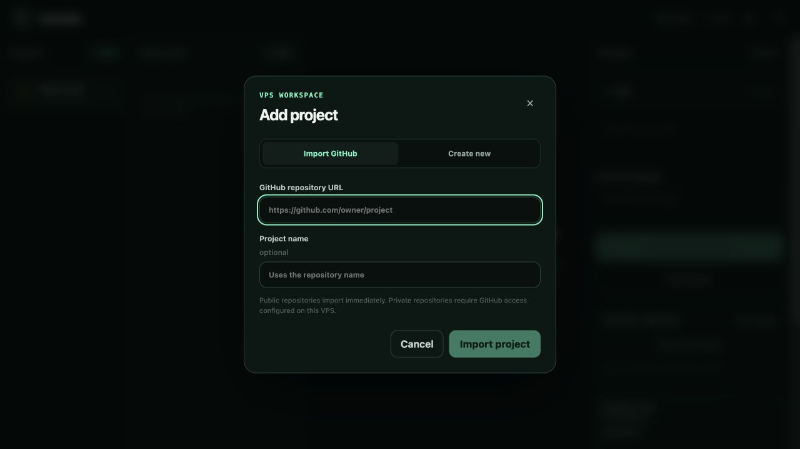
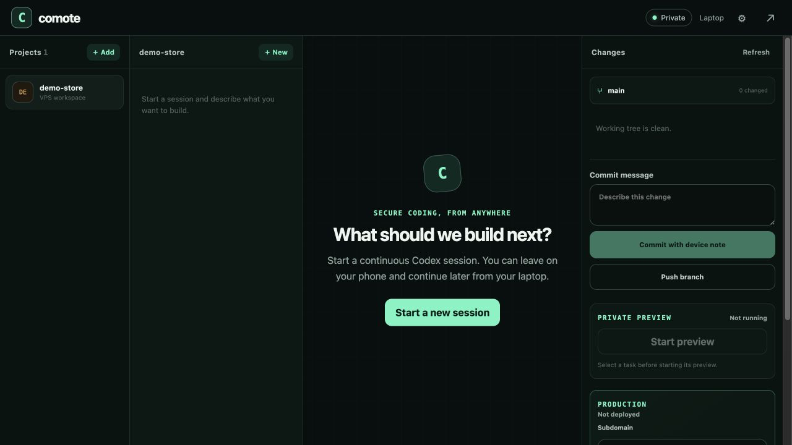
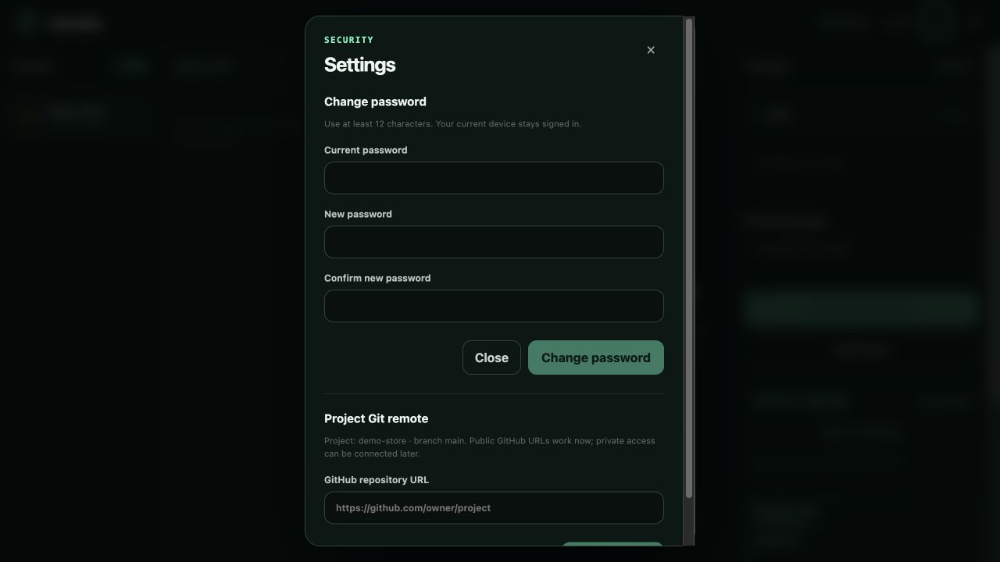
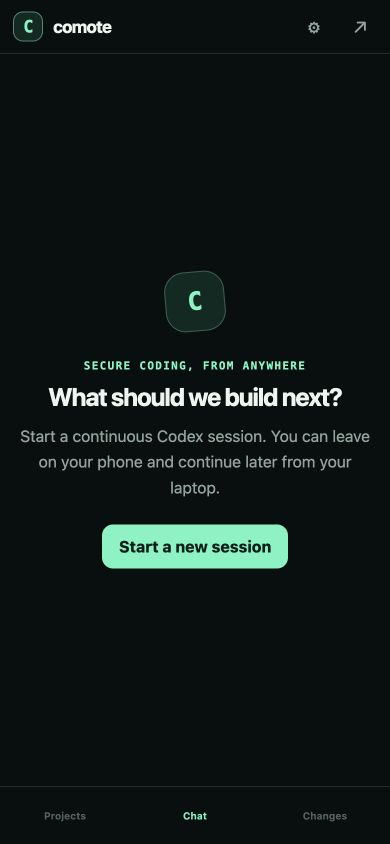
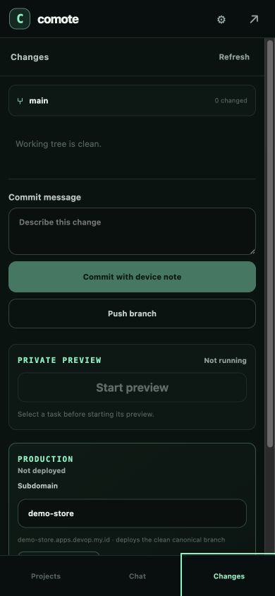

VPS adalah komputer kerja
Project, Codex, preview, database, dan aplikasi yang berjalan berada di VPS.
Panduan untuk pemula
Comote menghubungkan laptop atau HP Anda ke satu development workspace di VPS. Tulis permintaan dengan kalimat biasa, Codex mengerjakan kodenya, lalu Anda review, commit, push, dan deploy dari satu tempat.
Comote bersifat privat. Link aplikasi production dapat dibuat publik.
Gambaran sederhana
Project, Codex, preview, database, dan aplikasi yang berjalan berada di VPS.
Buka Comote dari perangkat mana saja. Semua perangkat melihat workspace yang sama.
Setelah menekan Push, commit tersimpan di GitHub. Database dan secret tidak ikut masuk GitHub.
Quick start
Ikuti urutan ini saat pertama kali menggunakan Comote.
Pasang Tailscale di laptop atau HP, lalu login ke tailnet yang sama. Setelah terhubung, buka:
comote-vps.tailb6b750.ts.net ↗Beri nama perangkat, misalnya HP Bob atau Laptop, lalu masukkan password Comote. Nama perangkat otomatis dicatat pada commit yang dibuat dari UI.

Tekan + Add. Pilih Import GitHub bila repository sudah ada, atau Create new untuk project kosong.

https://github.com/username/nama-project.Pilih project, tekan + New, lalu tulis apa yang Anda inginkan. Tidak perlu menghafal command terminal.

Codex dapat meminta approval sebelum menjalankan tindakan tertentu. Baca alasan atau command-nya, kemudian pilih Allow once bila sesuai. Setelah selesai, periksa daftar file dan diff di panel Changes.
Menyimpan pekerjaan
Setiap session baru bekerja di task branch terpisah, sehingga dua pekerjaan tidak saling menimpa.
Isi Commit message dengan kalimat singkat seperti feat: tambah halaman produk, lalu tekan Commit with device note.
Commit otomatis mencatat perangkat, VPS, Codex, dan session asal.
Push task branch hanya mengirim cabang pekerjaan untuk backup/review. Push main mengirim versi resmi yang sudah digabungkan ke GitHub.
Lakukan setelah task bersih dan sudah di-commit. Jika ada konflik, Comote berhenti aman; minta Codex membantu menyelesaikannya.
Public berarti siapa pun boleh membaca, bukan menulis. Push tetap memerlukan SSH key atau credential GitHub dengan akses ke repository.
GitHub
Lakukan satu kali untuk project baru yang dibuat dari Comote.
Untuk menghindari konflik awal, jangan centang README atau .gitignore jika project sudah dibuat di Comote.
Pilih project terlebih dahulu, lalu tekan ikon roda gigi.
Tempel URL repository, tekan Save remote, kemudian gunakan Push main.
Deploy key yang ada untuk repository Comote tidak otomatis berlaku pada repository lain. Gunakan key akun GitHub untuk banyak repo, atau deploy key tersendiri per repo.

Preview & production
Preview dan production memiliki fungsi yang berbeda.
Private preview
Tombol: Start preview → Open preview → Stop
Production
nama.apps.devop.my.id.Tombol: Deploy production → Open production
Database cukup lewat prompt
Minta Codex membuat comote.deploy.json sesuai kebutuhan. Comote sudah siap untuk SQLite, PostgreSQL, MySQL, dan Redis.
“Siapkan aplikasi ini untuk deploy di Comote. Gunakan SQLite, buat migration, persistent storage, dan health check.”Di handphone
Gunakan menu bawah untuk berpindah antara Projects, Chat, dan Changes.


Contoh sehari-hari
Gunakan bahasa Indonesia atau Inggris. Jelaskan hasil yang diinginkan.
“Tambahkan login email dan password. Gunakan SQLite dulu, buat test, lalu beri saya ringkasan.”
“Tombol simpan tidak bekerja di HP. Cari penyebabnya, perbaiki, lalu test pada ukuran mobile.”
“Audit security dan reliability app ini. Perbaiki temuan yang aman, jalankan test, lalu rangkum hasilnya.”
“Siapkan production config untuk Comote dengan PostgreSQL, migration, health check, dan SESSION_SECRET.”
“Baca pekerjaan terakhir di session ini dan lanjutkan bagian checkout yang belum selesai.”
“Review semua perubahan task ini, jalankan test, dan beri tahu apakah sudah aman untuk di-merge.”
Bila ada kendala
Sebagian besar masalah dapat dikenali dari pesan yang muncul di UI.
Pastikan aplikasi Tailscale aktif dan perangkat login ke tailnet yang sama. Comote memang tidak dapat dibuka dari internet umum.
Periksa URL GitHub. Public repository harus dapat dibuka tanpa login. Untuk private repository, akses GitHub perlu dikonfigurasi pada VPS.
Repository tujuan belum memberikan akses tulis kepada SSH key/credential VPS, atau remote masih menggunakan metode autentikasi yang berbeda.
Minta Codex memasang dependency dan memastikan package.json memiliki script dev atau start. Baca Preview logs untuk detail.
Pastikan canonical branch bersih, dependency memiliki package-lock.json, required secret sudah disimpan, dan health check aplikasi berhasil.
Jangan memaksa merge. Kembali ke session task dan minta: “Selesaikan conflict dengan main, jalankan test, lalu commit hasilnya.”
Siap mulai?
Mulai dari perubahan kecil, review hasilnya, lalu gunakan workflow commit → merge → push → deploy.